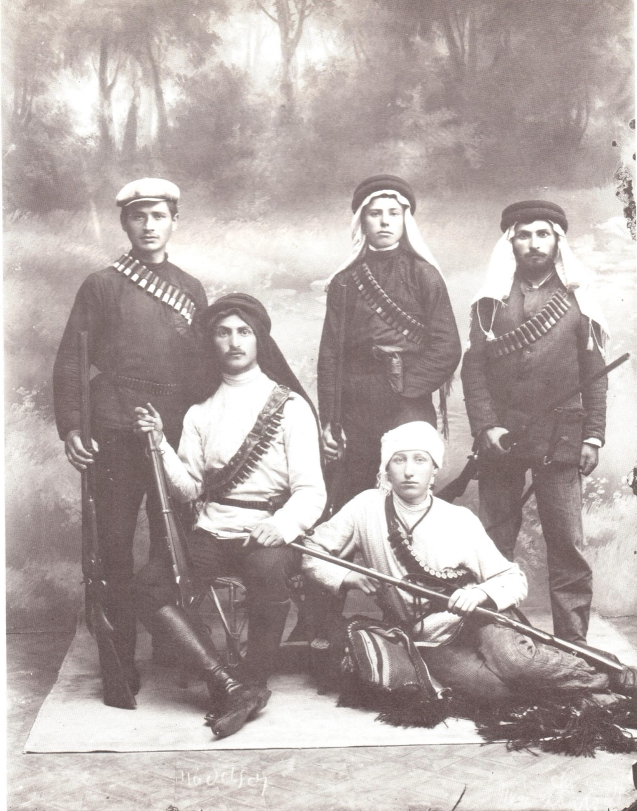
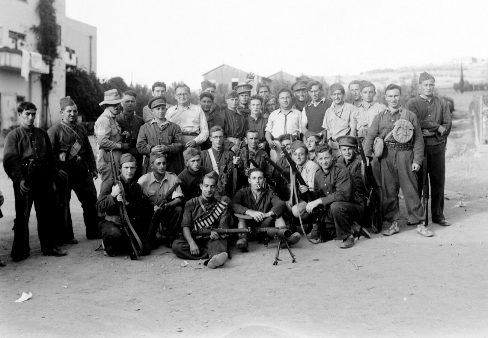
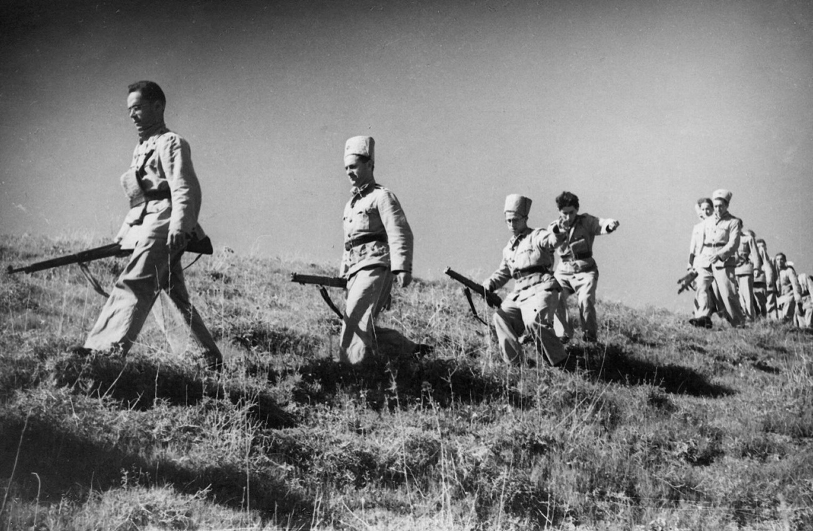

Arab violence barely moved the ordinary migrant's decision to come — European push dominated that. But it had a decisive effect on how the Yishuv organized. This is the response channel, distinct from the migration-motivation channel: the defense leagues are where the violence cashed out. The pattern is a near-textbook violence → organization → escalation cycle — strongest for the mainline (Haganah, Irgun, the Revolt-era forces), with the earliest organizations a fusion of defence and an offensive land-and-labour program, and one clean exception.



The arc in three frames: the fusion beginning — HaShomer's guards adopting the martial dress of the people they were formed against — and the Revolt-era forces, by then armed, uniformed, and operating alongside the British whose protection had failed twice before.
| Organization | Founded | Triggering violence / context | Verdict | Source |
|---|---|---|---|---|
| Bar-Giora | Sept 1907 | Bedouin raiding and Arab attacks on the colonies — but fused with the "Hebrew labour" / kibbush ha-shmirah program (displacing Arab guards) and Shohat's Russian self-defence tradition. | Fusion | Morris 772–774 |
| HaShomer | 1909 | Formed "responding to increased Arab militancy after the Young Turks' revolt of July 1908" — yet its men were also "conquest groups," and the moshavot found them provocative. | Fusion | Morris 774 |
| Haganah | 1920 | Tel Hai (Mar 1920), the Nebi Musa / Jerusalem riots (Apr 1920), Jaffa (1921) — and "a sobering awakening from the illusory hopes placed in the British administration… defended against rioters." | Strong yes | Shapira 6013–6021 · Morris 1148 |
| Irgun (Irgun Bet) | 1930–31 | The 1929 Hebron / Buraq riots. "The riots had another important outcome: a band of Haganah officers set up their own group" — wanting less havlagah (restraint). | Strong yes | Morris 1328 |
| Notrim / Settlement Police | 1936 | The Arab Revolt. Some 2,700 supernumerary Jewish policemen recruited and armed under the British. | Strong yes | Morris 1430 |
| FOSH / Night Squads | 1937–38 | The Arab Revolt. The Haganah field companies; Orde Wingate's Special Night Squads — "the main Jewish response to the renewal of the revolt was a change in strategy." | Strong yes | Morris 1573 · Shapira 11836 |
| Lehi (Stern Gang) | 1940 | None. Split from the Irgun precisely because the Irgun paused its fight against Britain for the war — an anti-British secession, not an Arab-violence response. | Exception | Morris 1698 |
| Palmach | 1941 | WWII Axis-invasion fear + a British-backed Yishuv strike force. Revolt-rooted, but triggered by WWII strategy, not a specific Arab-violence round. | Partial | Shapira 13587, 14308 |
Violence, defense organizations, British policy, the Holocaust, and the refugee ships — figures corrected to the corpus (both-sides casualties), the causation column marked interpretation, not fact.
Each wave of violence exposed the inadequacy of the current defense structure, spawning a more militant successor.
| Event | Date | Impact | Response | Causation |
|---|---|---|---|---|
| Early settlement raids | pre-1907 | Ongoing Bedouin / Arab theft and assaults on the colonies | → Bar-Giora founded (Sept 1907) — fused with the conquest-of-guarding program | ●●● Direct |
| Bar-Giora too small to scale | 1908–09 | ~12 members; could not cover the settlements | → HaShomer founded (Apr 1909), amid post-1908 Arab militancy | ●●● Direct |
| Battle of Tel Hai | Mar 1920 | 6 defenders killed (incl. Trumpeldor); dozens of Arab attackers also died | Became a cornerstone of Zionist myth | ●○○ Context |
| Nebi Musa / Jerusalem riots | Apr 1920 | 5 Jews murdered by Arab rioters in the Old City; ~4 Arabs killed in the clashes and British dispersal. ~240 wounded. | → Haganah founded (Jun 1920) — "a sobering awakening" re British protection | ●●● Direct |
| Jaffa riots | May 1921 | ~47 Jews killed by Arab mobs — incl. a massacre at an immigrants' hostel (13 dead, the writer Y. H. Brenner among them); the ~48 Arab dead fell mostly to British police and military suppressing the riots. | Haganah expands; adopts havlagah (restraint) | ●●○ Catalyst |
| Hebron / Buraq riots | Aug 1929 | 133 Jews murdered by Arab attackers — 67 unarmed at Hebron, plus Safed and Motza; the ~116 Arab dead were "many… caused by rifle fire by the police or military forces" (Shaw, Cmd 3530). The Yishuv killed few. | Havlagah increasingly seen as a failure | ●●○ Catalyst |
| Frustration with Haganah restraint | 1930–31 | An ideological + tactical split | → Irgun (Irgun Bet) founded, rejecting havlagah | ●●● Direct |
| The Arab Revolt | 1936–39 | ~500 Jews killed by Arab rebels (ambush, bombing); the far larger Arab toll (~5,000+) fell mostly to British suppression, plus ~900–1,000 killed intra-Arab (rebels vs. "collaborators") — few by Jews | → Notrim, FOSH, Wingate's Night Squads; Britain → the 1939 White Paper | ●●● Direct |
Three White Papers ratcheted down immigration; then the Holocaust began and the door was shut.
| Event | Date | Impact | Response | Causation |
|---|---|---|---|---|
| Churchill White Paper | Jun 1922 | Tied immigration to "economic absorptive capacity" | The first formal restriction | ●○○ Context |
| Passfield White Paper | Oct 1930 | Restricted immigration + land purchase, after the 1929 riots | Reversed under Zionist pressure (the 1931 MacDonald "Black Letter") | ●○○ Context |
| MacDonald White Paper | May 1939 | Capped immigration at 75,000 over 5 yrs; an Arab veto thereafter | On the eve of WWII — shut the door at the worst possible moment | ●●● Direct |
| Irgun declares a wartime truce | Sept 1939 | Irgun suspends anti-British operations for WWII | Stern rejects it → Lehi founded (Aug 1940) | ●●● Direct |
| SS Patria | Nov 1940 | 252 refugees killed by a Haganah sabotage that miscalculated the charge — an attempt to stop the deportation of 1,700 to Mauritius | — (not a British killing, despite the deportation policy behind it) | ●○○ Context |
| Axis threat to Palestine | 1941 | Rommel advancing through North Africa | → Palmach founded (1941), with British cooperation | ●●● Direct |
| Wannsee Conference | Jan 1942 | The "Final Solution" formalized | The British immigration quota left unchanged | ●○○ Context |
| MV Struma | Feb 1942 | 769 aboard, 1 survivor — torpedoed by a Soviet submarine, traceable to a British transshipment veto | Britain ends the policy of returning caught refugees to Europe | ●○○ Context |
| Extermination camps at peak | 1942–44 | Auschwitz, Treblinka, Sobibor at full capacity | Only ~51,000 of the 75,000 certificates were ever used | ●○○ Context |
| WWII ends | May 1945 | ~6 million Jews dead | ~250,000 survivors in DP camps; the White Paper still enforced | ●●● Direct |
| The blockade / Aliyah Bet | 1945–48 | ~50,000 refugees intercepted, interned in Cyprus camps | Drove the post-war illegal-immigration campaign | ●●● Direct |
| SS Exodus 1947 | Jul 1947 | 4,500 survivors; 3 killed — rammed, then returned all the way to DP camps in Germany | Global outrage → momentum toward the UN partition vote | ●●○ Catalyst |
On the figures — circumstances, not parallel counts. A "X Jews + Y Arabs killed" body count manufactures a false symmetry. The asymmetry is in how people died. In the riots, Jews were murdered as victims by Arab attackers (Hebron, Safed, the Jaffa hostel), while the Arab dead were — in the Shaw Commission's own words — "many… caused by rifle fire by the police or military forces," i.e. killed by the British suppressing the riots, not by Jews (the Yishuv killed few). In the Revolt the Arab dead vastly outnumber the Jewish, but most fell to British suppression or intra-Arab killing. And the Patria's 252 dead were caused by a Haganah sabotage, not Britain. The causation column is interpretation, not fact. Primary: Report of the Commission on the Palestine Disturbances of August 1929 (Cmd 3530); Benny Morris, Righteous Victims.
The official British inquiry into the 1929 disturbances, in its own words on who killed whom (Cmd 3530 — a Crown publication, public domain). The two passages together are the disaggregation.
"About 9 o'clock on the morning of the 24th of August, Arabs in Hebron made a most ferocious attack on the Jewish ghetto and on isolated Jewish houses… More than 60 Jews — including many women and children — were murdered and more than 50 were wounded. This savage attack, of which no condemnation could be too severe, was accompanied by wanton destruction and looting."
"During the disturbances 133 Jews were killed and 339 were wounded… 87 Arabs were killed and 181 who had been wounded were treated in hospital [the in-hospital count; later amended upward to ~116]. Many of the Arab casualties and possibly some of the Jewish casualties were caused by rifle fire by the police or military forces."
Read together, these are the asymmetry stated by the British inquiry itself: the Jewish dead were murdered by Arab attackers; the Arab dead were largely "caused by rifle fire by the police or military forces" — i.e. by the British suppressing the riots, not by Jews. A parallel "133 + 116" body count erases precisely this.
The core sequence — Haganah (1920), Irgun (1929), the Revolt-era forces (1936–39) — is each explicitly documented as formed in response to a specific round of Arab violence. Morris's "the riots had another important outcome" is the cycle stated almost as a law. British protection-failure is the recurring co-trigger: 1920 and 1929 both.
Caveat 1 — the earliest organizations were a fusion, not a pure response. Bar-Giora and HaShomer formed amid real Arab and Bedouin violence — but they were equally instruments of the labour-Zionist conquest-of-guarding program, displacing Arab guards, their "conquest groups" cultivating newly-bought land. Morris documents their offensive edge directly: the moshavot found HaShomer "aggressive and provocative"; the settler Tolkovsky feared paying for their "unnecessary provocations"; village headmen accused them of theft and murder. "Formed in response to Arab violence" understates the early ones — it was defence welded to a displacement program that itself generated friction.
Caveat 2 — Lehi is the clean exception; Palmach is mixed. Lehi (1940) was about fighting Britain, not Arabs. Palmach (1941) was WWII-strategic — Axis-invasion defence, British support — Revolt-rooted but not triggered by a round of Arab violence.
This is the response / treatment channel — how the Yishuv organized — and it runs opposite to the migration-motivation channel. Arab violence barely moved the ordinary oleh's decision to come (European push dominated); it overwhelmingly drove the Yishuv's self-defence institutions. The honest formulation: the institutions of Jewish self-defence were overwhelmingly violence-triggered — the thesis holds for the mainline — but the earliest were violence-response welded to an offensive land-and-labour program, and the latest, Lehi, inverted entirely toward Britain.
Sources. Benny Morris, Righteous Victims: A History of the Zionist-Arab Conflict, 1881–2001 (2001); Anita Shapira, Land and Power: The Zionist Resort to Force, 1881–1948 (1992). Both in the project corpus; line references are to the working extracts.
Scope & rigor. "Defense organization" is read as the Yishuv's self-defence bodies; the Jewish Legion (a WWI military unit) is excluded. Verdicts are the author's synthesis, not the sources' labels. The same evidentiary standard is applied to both sides: where the corpus documents an organization's offensive or provocative dimension (HaShomer's "conquest groups"; the Irgun's 1937–38 bombings of Arab civilians), it is recorded rather than flattened into pure defence. Companion: Who Was a Zionist? (the migration-motivation channel).